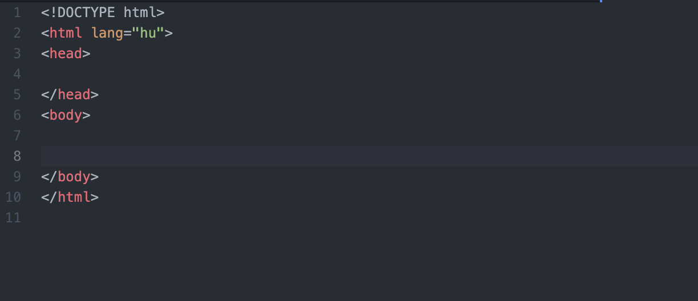
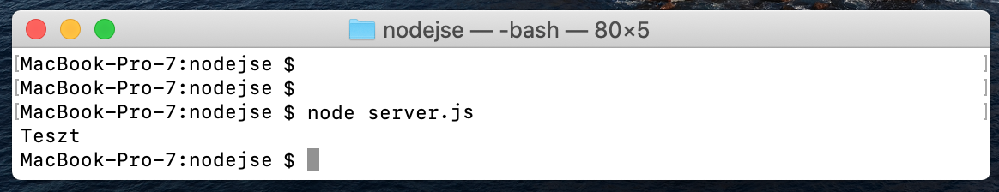

Real-Time Chat készítése NodeJS-el
Ebben a cikkben bemutatom, hogyan lehetséges egy valós idejű chat klienset készíteni HTML és JavaScript (NodeJS) segítségével.
A JavaScript egy scriptnyelv/programozási nyelv, amelyet a böngésző futtat az oldal letöltésekor (kliens oldalon). Interaktívvá lehet tenni vele a felhasználói felületeket: kezelni lehet vele az inputokat, programozni lehet vele eseményeket, továbbá animációkat is állíthatunk be vele.
Felmerül a kérdés, hogy mi az a NodeJS akkor?
A Node.js egy szoftverrendszer amit webszerverek (szerver oldal) készítésére hoztak létre. A programok rajta JavaScript-ben írhatóak, eseményalapúak. Lényegében a JavaScript programozási nyelvvel már nem csak a felhasználók által látott tartalommal bánhatunk, hanem folyamatosan a webszerveren futó JavaScript programot is írhatunk: ennek hála, tudjuk elkészíteni például a chat alkalmazásunkat.
Megjegyzés: A NodeJS szorosan összekapcsolódik az NPM(Node Package Manager)-el, ami segítségével külső, előre megírt segéd program-csomagokat (repository, repo) kezelhetünk a saját programunkon belül.
A fejlesztés a következő lépésekben történik:
- A projekt alapjai
- A chat megjelenése
- Merre tovább?
- A NodeJS szerver alapjai
- 3/1 eset: A chat ablak betöltése
- 3/2 eset: Üzenet mentése és klienseknek elküldése
- 3/3 eset: kliensek eltárolása & POLLING, azaz üzenetek letöltése
- Már nincsen sok hátra
- Futtatás
A lépéseket végigkövetve LEGO szerűen összeáll majd a működő kis chat alkalmazásunk, és megértjük a program felépítését.
1. A projekt alapjai
Első körön töltsük le a NodeJS-t és telepítsük (vele együtt települ az NPM is):
Ez a lépés elengedhetetlen, hogy a szervert működésképes állapotba tudjuk hozni.
Ha ezzel megvagyunk, akkor a projektünkön belül 2 fájlra lesz szükségünk. Hozzuk létre a
- index.html
- server.js
nevű fájlokat.
Ezzel előkészítve az alkalmazásunkat.
2. A chat megjelenése
A index.html-el fogjuk kezdeni az utunkat, amellyel elkészítjük a Chat alkalmazásnak a megjelenését amit a felhasználók elérhetnek.
Kezdjük is szép sorjában. Az index.html alapvető sorait már fejből is tudhatjuk:
Mit szeretnénk megjeleníteni? Mi kell egy chat alkalmazáshoz?
Először is, ne feledkezzünk meg a html fájlunk karakterkészletét UTF-8-ra állítani a head-ben.
Ezek után, a következő elemekre lesz szükségünk:
- Felhasználó név (text input)
- Üzenetváltás log (textarea)
- Kündendő üzenet (text input)
- Küldés gomb (button)
Hozzuk létre az említett elemeket, és adjunk nekik megfelelő ID-kat. (#name, #output, #message, #send)
Fontos továbbá, hogy az #output textarea elementünket ellássuk a disabled attribútummal, ugyanis nem szeretnénk ha a felhasználó módosítani tudná a chat előzmények tartalmát.
Esztétikai okokból ezeket az elemeket csomagoljuk egy #chatAblak nevű div elementbe, adjunk nekik placeholdereket, és ráadásképp még adhatunk az oldal tetejére címsort is.
Egyenlőre valahogy így néz ki az oldalunk:
Természetesen ez a "csiszolatlan-gyémánt" külső elég gyér hatást kelthet az oldalunkra látogató felhasználóknak.
Kicsit fűszerezzük meg hát a dolgokat, formázzuk ízünk szerint az oldalt a head-ben, CSS segítségével.
A következőket változtattam én:
- A body tartalmát középre igazítottam
- A #chatAblak-ot megfelelő padding-el, margin-nel (hogy középen legyen) és border-el láttam el, továbbá megadtam a maximális szélességét.
- A textarea tartalmát szintúgy padding-el láttam el, és alul-felül margin-nel. Háttérszínt állítottam.
- A textarea-nak 400px magasságot, 100%-os szélességet állítottam (amiből kivontam 20 pixelt, mivel annyival van behúzva a #chatAblak tartalma).
- Utolsóként pedig a textarea méretezhetőségét levettem, illetve bármilyen alap border-t és outline-t leszedtem róla.
Valahogy így:

S immár kész is a megjelenésünk:
Merre tovább?
Előzőekben elkészültünk a Chat alkalmazásunk kinézetével. Itt az ideje, hogy életre is keltsük a kreálmányunkat.
Ehhez meg kell írnunk az említett NodeJS technológiával a szervert, amely felel majd az üzenetek fogadásáért, mentéséért.
Lépjünk át a server.js nevű fájlunkba, és írjuk bele a következő sort:
Ezek után futtassuk a kódunkat a Terminal segítségével: Nyissuk meg a Terminalt, majd navigáljunk vele a projektünk mappájába a cd paranccsal
cd c:\projekt_helye
Majd futtassuk szerverünket:
node server.js
Ha minden igaz, megjelent a következő kis üzenet:
Teszt
(A képernyőkép MacOS-ről származik, Windowson eltérő a Terminal kinézete)
Ez azt jelenti, hogy a NodeJS megfelelően lett telepítve a gépünkre, és a szervert futtatni tudjuk majd a http://localhost:8080 URL címen
A NodeJS szerver alapjai
Egyenlőre nem nagyon van funkciója a kódunknak, úgyhogy kezdjük el bővítgetni:
1) Importáljuk be a legfőbb funkciókat (http, url és file system)
Ezek elengedhetetlenek a szerverünk működéséhez.
2) Hozzunk létre az üzeneteknek (messages) és a felhasználóknak (clients) egy array-t
3) Majd hozzuk létre a szervert, a 8080 porton figyelve a lekéréseket.
Így:
Így a http-n létrehoztuk a szervert ami a 8080 porton fut. A szerver figyelni kezdi a lekéréseket (req), illetve válaszokat ad (res).
Az oldalunk innentől a http://localhost:8080 url cím alatt lesz elérhető
3/1 eset: A chat ablak betöltése
A felhasználó felmegy a chat alkalmazásunk http://localhost:8080-címére. Ilyen esetben bekell töltenünk neki az index.html-ben található chat ablakunkat. Ehhez ellenőrizzük az URL lekérésünket, hogy valóban a főoldali URL címet kérte-e le.
Kérjük le az url cím összetevőit a url.parse(req.url); paranccsal.
Ha a kapott pathname == '/' akkor a file system segítségével beolvassuk az index.html-t (fs.readFile() paranncsal)
A beolvasott index.html-t pedig response-ként visszaadjuk a felhasználónak, így: res.end(data);
Egészítsük ki a kódunkat, hogy a szerveres rész így nézzen ki:
Ezzel meg is vagyunk. Futtassuk a szerverünket a
node server.js
kóddal ismét. Ha minden igaz, a http://localhost:8080 címen láthatjuk mostmár a chat ablakunkat
Így viszont nem csupán egyszer lefutott a kódunk, hanem folyamatosan működésben is marad, hisz ez egy szerver dolga.
Fejlesszük tovább a kódunkat, úgyhogy állítsuk le a szervert addigis:
CTRL + c billentyűkombinációval tehetjük meg ezt. (A Terminal ablakába lépve)
3/2 eset: Üzenet mentése és klienseknek elküldése
A felhasználók tegyük fel üzeneteket is szeretnének küldeni, hisz ez lenne a lényege a projektünknek.
Mondjuk azt, hogy az üzeneteket a következő URL címen várjuk: http://localhost:8080/message/ÜZENET_HELYE. Ilyen esetben lekell mentenünk a szerveren a messages arrayunkba a beérkező üzenetet.
Adjunk hozzá egy else if ágat az if(url_parts.pathname == '/') kódunk után. Azt pedig töltsük ki a következőképp:
Így, a decodeURIComponent() paranccsal dekódoltuk az url path nevét, és a .substr(9) paranccsal leszedtük az első 9 karaktert (azaz a /message/-t).
Így megmaradt az utána következő rész, az ÜZENET_HELYE
Ezután továbbszeretnénk küldeni az üzenetet az aktív klienseknek. Ehhez JSON objectet fogunk alkalmazni.
Mi az a JSON?
A JSON leegyszerűsítve array-okat képes tárolni szöveg formájában. Bővebb információ a JSON-ról Wikipédián
Egészítsük ki a kódunkat a res.end(); előtt a következő sorokra:
Így for ciklussal végigmentünk a klienseken (akikkel egyenlőre még nem foglalkoztunk, hisz a clients arrayunk üres), és elküldtük nekik response-ként az új üzenetet.
Kitérve kicsit a kliens részre:
Az oldalunkra érkező felhasználók response-kat (válaszokat) várnak a szervertől. Ezeket a response-kat a következőképp kapják meg: res.end(ESETLEGES_ADAT_HELYE)
Jelen esetben, a clients arrayban fogjuk eltárolni majd ezeket a válaszra váró klienseket (res). Így ha nekik akarunk bármilyen adatot küldeni, elég végigmenni az összes kliensen egy for ciklussal, és clients[i].end(ADAT_HELYE) kóddal el is tudjuk küldeni a kívánt adatot nekik.
3/3 eset: kliensek eltárolása & POLLING, azaz üzenetek letöltése
Első körön adjuk hozzá a kliensekhez (clients) az adott felhasználóhoz tartozó res változónkat. Így nyomon követjük éppen kik is vannak a szerverünkön.
A felhasználó folyamatosan lekéri majd a http://localhost:8080/poll/EDDIG_LETÖLTÖTT_ÜZENETEK_SZÁMA-címet. Ezt hívják LONG POLLING-nak. Ha több üzenet van eltárolva a szerveren, mint amennyit a kliens letöltött, akkor ezen URL cím lekérése az új üzeneteket adja válaszként.
A korábban említett módon nyerjük ki az URL-ből /poll/ után található számot, és nézzük meg, ennél több üzenet van-e elmentve a szerveren.
Ha igen, a régebbi üzeneteket leszámítva (slice paranccsal leszedve), adjuk vissza JSON Objectként az új üzeneteket és az össz üzenet számot.
Egészítsük ki ismételten egy else if ággal az if(url_parts.pathname == '/') kódunkat.
Valahogy így kéne, hogy kinézzen:
Már nincsen sok hátra
Lépjünk vissza az index.html fájlunkba, és egészítsük ki még a head tartalmát.
Két dolgot kell még megírnunk:
- A gomb lenyomására üzenet küldés
- Folyamatos POLLING, azaz lekérdezés, hogy van-e új üzenet a szerveren.
1. A gomb lenyomására üzenet küldés
Ehhez jQuery-t fogunk használni, ami egy Javascript library. Bővebben a Wikipédián
Importáljuk be tehát a jQuery-t: http://code.jquery.com/jquery-1.6.4.min.js
Majd írjuk meg a következő scriptet:
Így, a $(document).ready()-val megvárjuk míg a dokumentumunk betölt, majd a $("button").click() funkcióval figyeljük az esetleges küldés-kattintásokat
encodeURIComponent() paranccsal kódoljuk az üzenetünket, és elküldjük a felhasználó nevünkkel együtt a http://localhost:8080/message/ címre
2. Folyamatos POLLING, azaz lekérdezés, hogy van-e új üzenet a szerveren.
Ezek után egészítsük ki a scriptünket a következőre:
Így, létrehoztuk a poll funkciót, ami folyamatosan lekéri önmagát. Ha válasz érkezik a szerverről (azaz volt új üzenet a szerveren), akkor a #output textarea tartalmát kiegészítjük az új üzenetekkel és elmentjük az új össz üzenet számot.
Ez a funkció felel azért is, hogy az oldal betöltésekor az eddig felhalmozódott üzeneteket is letöltse.
Ha minden igaz, el is készültünk.
Futtatás
Futtassuk a szerverünket a korábban említett módon, a terminálból:
node server.js
Majd navigáljunk a böngészőnkben a http://localhost:8080/ oldalra.
Ha nem írtunk el semmit, működni fog.
Készítette: Kárpáti András